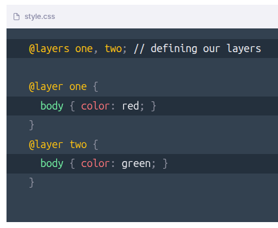

CSS = Cascading Style Sheets
The CSS Cascade is the way our browsers resolve competing CSS declarations.
The further down the cascade a declaration falls, the less likely it will end up as the final style.
Type of rule
There are 4 basic types of rules:
Rules that apply to an active transition take the utmost importance
When we add !important to the end of our declaration, it jumps to this level of the Cascade. Ideally, you reserve this level for Hail Marys, which are needed to override styles from third-party libraries.
p{color: orchid !important;}
Rules that apply to an active animation jump up a level in the Cascade
This level is where the bulk of rules live
where the rule was defined
This is the only level that you have control over, as a web developer.
Each browser has its own set of styles, which is why things like <button>s have default styles.
Funky fact alert! The hierarchy here is actually reversed for !important rules, meaning that an !important browser default rule wins over an !important website rule (whereas a website rule normally wins over a browser default).
There are five levels of selectors:
Styles declared within a style HTML property are the most specific
Cascade layers allow you to define explicit "layers" of styles, for intentional handling of specificity. Layers "win" by being defined later, for example:

In this example, our body text will be green, since layer two is defined after layer one. Unlayered styles will take precendence, though, to help with backwards compatibility.
When we create a CSS declaration, we can target specific elements using selectors.
We can target elements based on their id, using the syntax #id
We can target elements based on their class, using the syntax .classThis level also includes attribute selectors that target HTML attributes, like [checked] and [href="https://wattenberger.com"] This level also includes pseudo-selectors, like :hover and :first-of-type
We can target elements based on their tag type, using the syntax type This level also includes pseudo-elements, like :before and :selection
Fun fact alert! The universal selector (*) and combinators (+, >, ~, _, ||) have no effect on specificity.
One thing to note about levels on this tier is that the number of hits on the highest-reached level matter.
Additionally, on this tier of the Cascade, ties can be broken within this tier. This means that, if two rules have the same number of hits on their highest level, one can win by having a hit on the next level down.
And lastly, we descend to the fourth, and final, tier of the Cascade, which looks at the order that the rules were defined in.
Rules that are defined later in linked stylesheets or <style> tags will win, given that everything else in the Cascade is the same.